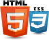

Алатките HTML и CSS ги совладав во рамки на изборниот предмет информатички технологии во средно, а ги усовршив во рамки на предметот основи на веб дизајн.
Во рамки на информатичките предмети од трета и четврта година средно како и по предметите структурно програмирање и објектно-ориентирано програмирање се стекнав со солидни знаења и вештини за програмскиот јазик C++.
Со вештините за користење на алатките од пакетот MS Office се стекнав преку изучување, проектни задачи, презентации и истражувања во рамки на сите степени на образование, почнувајќи од основно, средно и факултет.